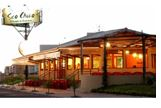

Lanches e Almoços
Lista Completa
Praça de Alimentação – Centro de Convivência – UFU – Campus Santa Mônica Praça de Alimentação – Center Shopping Sapore Gallaty Bar e Lanchonete Picante Restaurante e Quitanda Baiana Oila Sô Comida Caseira Barriga Cheia Banana Da Terra Bom Apetite |
|
Lista Completa
Bareto's |
|
Armazém Literário
|
Bar Saidera – Buteco de Comida
|
Água Doce Cachaçaria
|
Cachaçaria do Dedé
|
Mexicali
|
Rota 66 – Pub, Bar, Cervejaria e Comida Americana
|
Santo Malte - Bar e Restaurante
Endereço: Praça Rui Barbosa, 23 - Centro |
Tartan Hamburgueria Gourmet
|
Liro Point - Bar e Restaurante
Endereço: Avenida Princesa Isabel, 1272 – Tabajaras |
Cesil Bar
 |
Endereço: Av.Amazonas, 920. Bairro Brasil |
Beco da Canela – Bar
Endereço: Campus Santa Mônica da UFU, no Bloco 1Q Telefone: 34 3239-4204 Horário de Funcionamento: segunda à sexta das 08:30h às 11:30h e das 14:00h às 17:00h |
Carro de Boi – Bar e Restaurante
 |
Endereço: Av. Rondon Pacheco, 3393 - Cazeca |
Estância do cupim
Endereço: Avenida Anselmo Alves dos Santos, 1000 - Santa Mônica |
Ilha do Sol - Bar e Restaurante
Endereço: Av. Governador Rondon Pacheco, 2441 |
Seo Chico Choperia e Restaurante
|  |
Endereço: Av José Paes de Almeida, 1055 - Santa Mônica
|
Sibipiruna Bar
Endereço: Praça Adolfo Fonseca, 14 - Centro
|
Habib’s Uberlândia
Endereço: Av. Rondom Pacheco, 4000
|
Dom Barreto
 |
Endereço: Mercado Municipal - R. Olegário Maciel, 255 - Box 3 - Centro, Uberlândia - Minas Gerais, 38400-084
|